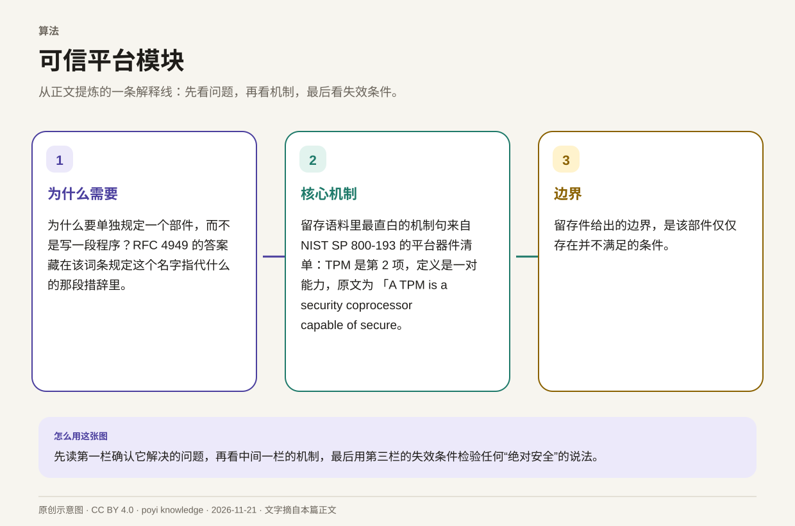
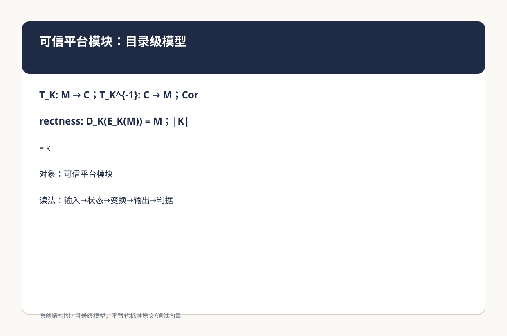

原理与机制
算法：可信平台模块（Trusted Platform Module）。留存语料里最直白的机制句来自 NIST SP 800-193 的平台器件清单：TPM 是第 2 项，定义是一对能力，原文为 「A TPM [4] is a security coprocessor capable of securely storing and using cryptographic keys and measurements of the state of the platform.」（TPM 是一种安全协处理器，能够安全地存储并使用密码密钥以及反映平台状态的度量值）。方括号里的 4 是该文档自己的参考文献编号，指向 sp800-193.txt:894-900 列出的 TCG 规范。同一行由这组能力引出三项用途，「These capabilities can be used, among other things, to secure data stored on the system, provide a strong device identity, and to attest the state of the system.」（这些能力可用于保护系统上的数据、提供强设备身份、证明系统状态）。也就是说，这一定义把两样东西放进同一个可寻址部件：平台可以使用、但在该部件自身保护之下的密钥，以及该部件能够签名的平台状态记录。封装形式被有意留宽：第 222 行以 「TPM's can be either discrete hardware devices,」（TPM 既可以是独立的硬件器件） 半句收尾，223-230 行是页码与页眉，续句在 sp800-193.txt:231：「firmware executed on a platform host controller or other microcontroller (the latter are sometimes referred to as firmware TPM's, or fTPM).」（也可以运行在平台主控制器或其它微控制器上的固件中，后者常称作固件 TPM，即 fTPM）。两半都照原样引用而不拼成一句，因为留存件里它们本来就不是连在一起的。

为什么重要
为什么要单独规定一个部件，而不是写一段程序？RFC 4949 的答案藏在该词条规定这个名字指代什么的那段措辞里。rfc4949.txt:17927-17930 的条目原文是 「The name of a specification, published by the TCG, for a microcontroller that can store secured information; and also the general name of implementations of that specification.」（一个规范的名称，由 TCG 发布，规定一种可存储受保护信息的微控制器；同时也是该规范各实现形式的通用名称）——引文里的宽空格是这个文件给续行保留的六个空格缩进，照原样带出。由此读出两点设计后果。第一，同一个缩写既指文档又指器件类别，所以 rfc4949.txt:17343-17344 那条 $ TPM 只能写 「See: Trusted Platform Module.」（见 Trusted Platform Module）。第二，发布者是一套标准组织而非某家厂商：TCG 在 rfc4949.txt:17883-17888 被定义为 「A not-for-profit, industry standards organization formed to develop, define, and promote open standards for hardware-enabled trusted computing and security technologies, including hardware building blocks and software interfaces, across multiple platforms, peripherals, and devices.」（一个非营利行业标准组织，为硬件使能的可信计算与安全技术开发、定义并推广开放标准，涵盖硬件构建块与软件接口，跨多种平台、外设与器件）。承重的是 「trusted computing and security technologies」（可信计算与安全技术） 与 「across multiple」（跨多种） 这两处措辞：如果可信保障要跨厂商成立，接口就必须钉在规定好的部件上，而不是某台机器的软件里。术语表还把该部件与它所服务的边界分开：可信计算基条目（rfc4949.txt:17877-17881）以 「Compare: TPM.」（对比：TPM） 收尾，即保护机制的总和与该芯片所提供的其中一部分机制是两件事。
应用与实例
本语料里最明确的部署陈述来自 W3C 的 Web Authentication Level 3，它把 TPM 列为合规认证器可以运行的位置之一：「on an on-device Secure Execution Environment, Trusted Platform Module (TPM), or a Secure Element (SE)」（在设备内的安全执行环境、可信平台模块（TPM）或安全单元（SE）上）（webauthn3.html:1506）。当认证器内嵌在客户端时，抽象模型把该模块变成其中最可信的部分：「This is particularly important for authenticators that are embedded in the WebAuthn client, as in those cases this cryptographic module (which may, for example, be a TPM) could be considered more trustworthy than the rest of the authenticator.」（这对内嵌于 WebAuthn 客户端的认证器尤其重要，因为此时该密码模块（例如可以是 TPM）可被视为比认证器的其余部分更可信）（webauthn3.html:5680-5682）。证明（attestation）环节把 TPM 写成一种独立格式：「This attestation statement format is generally used by authenticators that use a Trusted Platform Module as their cryptographic engine.」（该证明语句格式通常用于以 TPM 作为其密码引擎的认证器）（webauthn3.html:7510-7511），其中的 ver 字段是 「The version of the TPM specification to which the signature conforms.」（签名所符合的 TPM 规范版本）（webauthn3.html:7542）。规范也记录了这些格式早于它存在：「Various existing components and OS platforms (such as TPMs and the Android OS) have previously defined」（多种既有部件与操作系统平台（例如 TPM 与 Android 系统）此前已定义了）若干证明语句格式（webauthn3.html:6640）。AttCA 情形被描述为 「based on a Trusted Platform Module (TPM)」（基于可信平台模块（TPM）） 的认证器持有背书密钥（webauthn3.html:6828），并向证明 CA 逐凭据申请身份密钥，从而 「can limit the exposure of the EK (which is a global correlation handle) to Attestation CA(s).」（可以把 EK（一个全局关联句柄）的暴露限制在证明 CA 之内）（webauthn3.html:6832-6833）。隐私边界写在证书要求里：较早的 EK 凭据配置会在证书里带器件序列号，「called HardwareModuleName, that contains the TPM serial number in the EK certificate.」（即 HardwareModuleName 属性，它在 EK 证书中包含 TPM 序列号）（webauthn3.html:7628），而 webauthn3.html:7629 要求不要再把它放进证明证书的 Subject Alternative Name。

边界与攻击面
留存件给出的边界，是该部件仅仅存在并不满足的条件。SP 800-193 把该模块自身列为必须受保护的对象，而不是一串保障的来源：「While not all platforms include or make use of a TPM, on any system in which a TPM is included and used, its firmware must be protected given its criticality in helping ensure the trustworthiness of the platform.」（并非所有平台都包含或使用 TPM；但凡是包含并使用 TPM 的系统，其固件必须受到保护，因为它对保障平台可信性至关重要），紧接着 「TPMs also contain non-volatile memory storage which may contain critical data and, if so, must be protected.」（TPM 还含有非易失存储，其中可能存放关键数据，若是如此就必须加以保护）（两句都在 sp800-193.txt:222）。fTPM 这一实现形式在同一页面上扩大了受攻击面：功能角色改由 「firmware executed on a platform host controller or other microcontroller」（运行在平台主控制器或其它微控制器上的固件） 承担（sp800-193.txt:231），即与主机共用硅片的代码。最锋利的一句是该指南对信任根的规定，sp800-193.txt:341：「A RoT must be designed to always behave in the expected manner because its proper functioning is essential to providing its security-specific functions and because its misbehavior cannot be detected.」（信任根必须被设计为始终按预期行事，因为它正常运转是其提供安全功能的前提，而它的错误行为无法被检测到）。这句话是双向的——平台无法从外部检验该部件，这恰恰是它被信任的理由，也是文档把保护、检测、恢复的指南写在该模块自身固件与其周围器件上的原因，而不是把信任直接交给芯片本身。第 341 行前一句还列出信任根的用途 「measurement, storage, reporting, recovery, verification, and update」（度量、存储、报告、恢复、验证与更新），也就是要求 TPM 承担的功能词汇表。三份留存件里没有对该规范的任何攻破记录，因此该条目不声称任何攻击；WebAuthn 对同一不可知性的回答是结构性的：改为校验字段与证书链（webauthn3.html:7596-7615）。
历史与背景
三份留存件只能给自己定年，对该器件的首次出现一无所言。最早的是 RFC 4949：第 8 行带着 「August 2007」（2007 年 8 月），第 10 行写着 「Obsoletes: 2828」（取代 2828），第 14 行的标题是 「Internet Security Glossary, Version 2」（互联网安全术语表 第二版），同一串字在页眉里反复出现（第 17924 行把它与同一个日期并列）。该文档已经把这个词当作既成缩写来记录，并点名了发布它的标准组织（17927-17931 行），却没有为它所指的规范给出年份——这正是术语表能提供内容的上限。下一个可定年的留存件是 SP 800-193，第 2 行是其标题，第 11 行署 May 2018；它把 TCG 的库规范列为参考文献 [4]（sp800-193.txt:894-900，访问日期印作 5/2/18），这是本语料唯一登记了路径的 TCG 文档。最新的是 WebAuthn Level 3 留存件，webauthn3.html:972 印着 25 August 2026，其中带有 tpm 证明格式与一串 TPMv2 分部规范的参考文献。这些行里没有任何一行印出 TPM 规范的首次发布年份、版本沿革或提出者姓名，因此该条目不归因发明者、也不给出起源日期；目录行自带的那条未被留存的 TCG 规范书目，在这里不构成证据。
逐步示例与核验
形式模型与复算步骤
[C=E_K(P;r),\qquad P=D_K(C)]
可信平台模块的公开参数、密钥/随机数与消息；变量说明：P 明文，C 密文，K 密钥，r 随机化参数。1.按算法规范编码输入。2.在密钥控制下执行轮函数。3.输出密文并检查长度与格式。边界：公式只覆盖已登记的参数与假设；参数取值、标准版本和实现细节仍以来源为准。
参考出处
- Wikipedia search entry for 可信平台模块. https://zh.wikipedia.org/w/index.php?search=%E5%8F%AF%E4%BF%A1%E5%B9%B3%E5%8F%B0%E6%A8%A1%E5%9D%97
- Handbook of Applied Cryptography (Menezes, van Oorschot, Vanstone). https://www.cacr.math.uwaterloo.ca/hac/